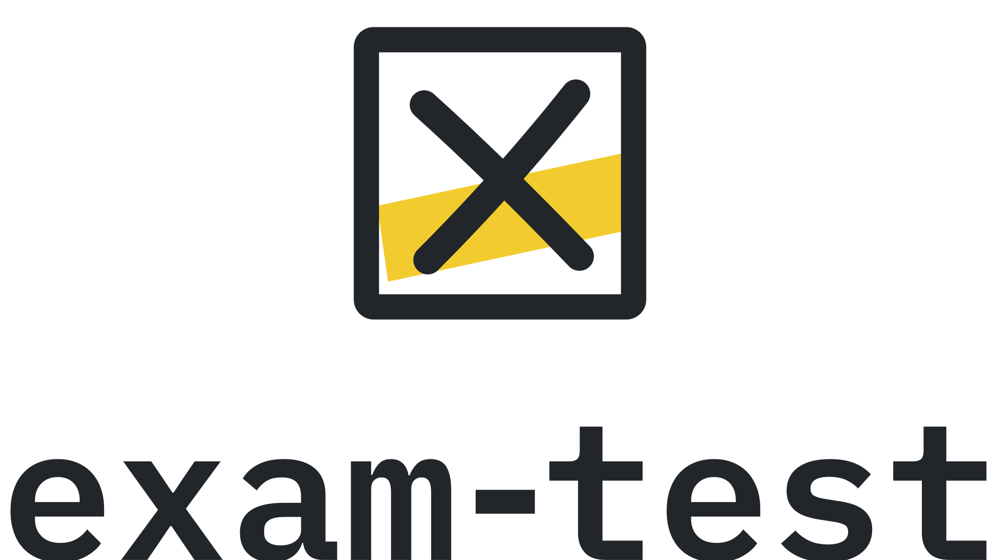
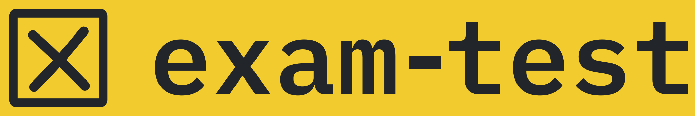
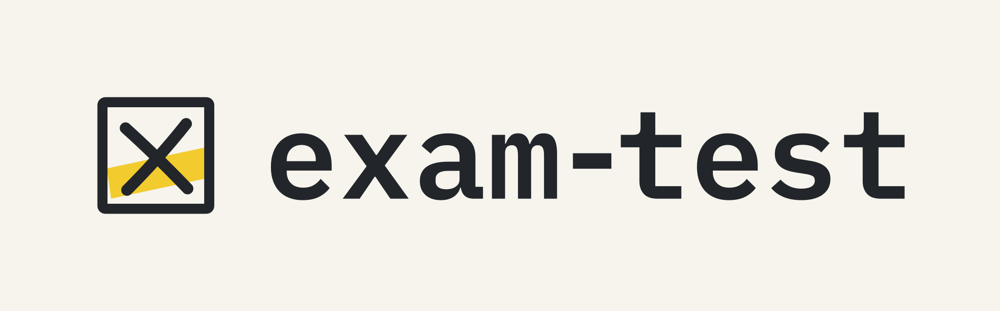
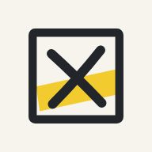
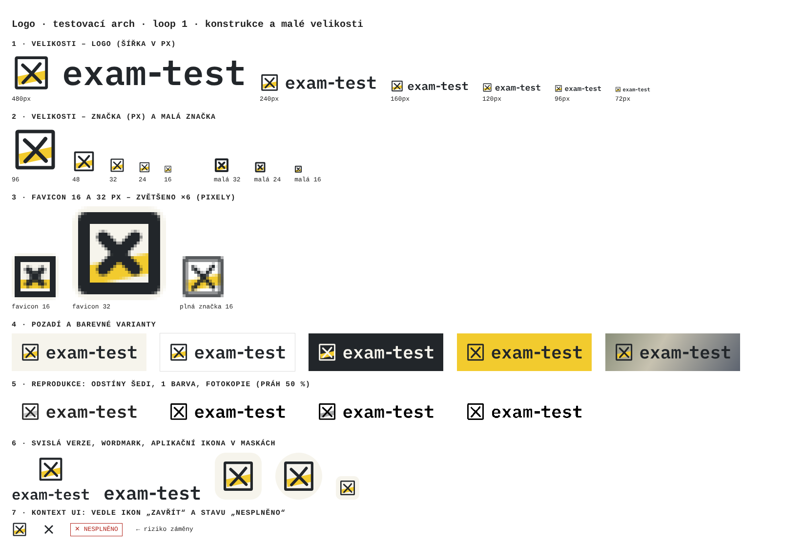

Hlavní logo
Výchozí volba. Web, dokumenty, prezentace. Od 160 px / 35 mm šířky.
Logo manuál · verze 1.0 · listopad 2026
Značka exam-test je zaškrtnuté políčko z odpovědního listu: ručně tažený křížek a pruh zvýrazňovače. Je to jediné gesto, které zná každý, kdo kdy psal zkoušku – na papíře i na obrazovce.
Čtverec s tlustou linkou – políčko z formuláře a odpovědního listu. Ostré rohy, žádné zaoblení.
Dva mírně prohnuté tahy s kulatými konci. Nesou stopu ruky – proto nejsou přesně rovné ani souměrné.
Šikmý žlutý pruh přetahuje přes okraj políčka. Říká „tohle je moje odpověď“ – a odlišuje značku od ikony „zavřít“.
Wordmark exam-test je IBM Plex Mono SemiBold převedený na křivky, s podsazenou pomlčkou. Strojopis odkazuje na formuláře a kódy.
Varianty
Výchozí volba. Web, dokumenty, prezentace. Od 160 px / 35 mm šířky.
120–160 px: menu aplikace, hlavička PDF, e-mail. Značka má kresbu pro malé velikosti.

Čtvercové a úzké plochy: titulní strana, roll-up, osvědčení.
Samostatně jen tam, kde je jméno blízko (profil na sítích, ikona aplikace). Od 48 px.
16–47 px. Kresba na pixelovou mřížku 16 a 32 px, tlustší tahy, rovný pruh.
Jen tam, kde značka už je (patička protokolu, titulky videa). Nikdy nepsat písmem – vždy soubor.
Barevné verze
Plnobarevné logo. Výchozí.
Patička webu, tmavé plochy, tmavá místa fotografií.

Pruh by splynul, proto chybí. Jen pro výrazné akce (CTA pás, merch).
Fax, razítko, laser, slepotisk, gravura. Bez pruhu – šrafovaná verze byla ve 2. kole zrušena.

Na fotce vždy na papírové ploše s ochrannou zónou. Nikdy přímo na rušném místě.

Značka na 74 % plochy – přežije čtvercovou, zaoblenou i kruhovou masku.
Konstrukce
| Míra | Hodnota |
|---|---|
| Výška značky v logu | 1,6 × výška verzálek wordmarku |
| Mezera značka – wordmark | 0,28 × výška značky |
| Ochranná zóna (všechny strany) | 0,5 × výška značky |
| Pomlčka ve wordmarku | podsazená o 110 jednotek (z 1000) |
| Svislé logo | značka 2,6 × verzálka, mezera 0,6 × verzálka |
Barvy loga
* Orientační převod. Před první tiskovou zakázkou ověřte nátiskem; Pantone je nejbližší odstín, ne přesná shoda.
Zakázané použití
Nedeformovat
Neotáčet
Neměnit barvy
Bez stínů a efektů
Ne přímo na fotku
Nepsat jméno písmem
Nepoužívat jako tlačítko „zavřít“
Neměnit křížek za fajfku
Ověření
Logo prošlo třemi koly testů. Každé kolo: testovací arch → zjištění → oprava v generátoru (tools/logo_params.json) → nový arch. Archy jsou ke stažení u každého kola.
Kolo 1 · konstrukce a malé velikosti
Kolo 2 · barvy a reprodukce
Kolo 3 · použití mimo web

Soubory
| Použití | Soubor | Poznámka |
|---|---|---|
| Hlavička webu | exam-test-logo.svg | výška 28 px |
| Menu aplikace | exam-test-logo-male.svg | výška 24 px |
| Patička webu, tmavé plochy | exam-test-logo-negativ-pruhledne.svg | jen na grafitu |
| Favicon | favicon.svg + favicon.ico | ICO obsahuje 16, 32 a 48 px |
| Ikona na plochu (iOS, Android) | app-icon-180.png, app-icon-512.png | apple-touch-icon, manifest |
| Náhled odkazu (OG) | og-image-1200x630.png | og:image |
| E-mailový podpis | exam-test-logo-male-480.png | zobrazit v šířce 120 px |
| Tisk, tiskárna, polep | exam-test-logo.pdf, …-cerne.pdf | vektor, barvy dle tabulky výše |
Logo se generuje skriptem tools/logo_build.py z parametrů tools/logo_params.json. Změna parametru a npm run logo přegeneruje všechny soubory najednou.